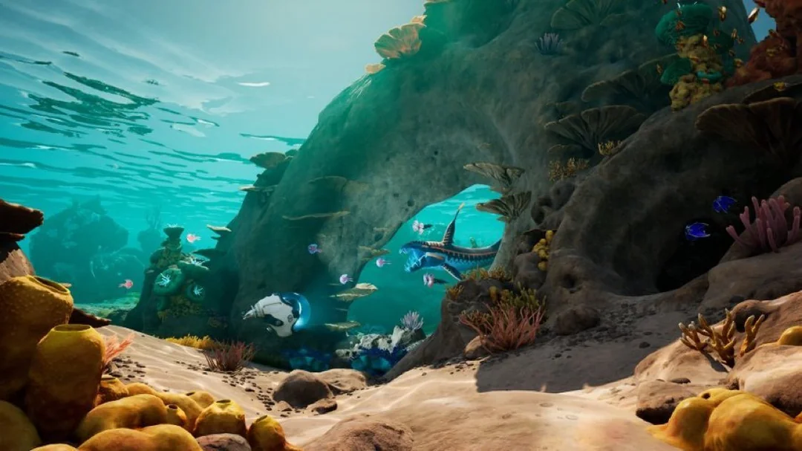

El caso Subnautica 2 vs Krafton es ya una de las batallas legales más llamativas de la industria del videojuego en la última década. Ted Gill, CEO de Unknown Worlds —el estudio creador de Subnautica—, fue despedido por su publisher Krafton junto con los co-fundadores Charlie Cleveland y Max McGuire justo cuando el juego estaba listo para su lanzamiento en Early Access. La acusación de los fundadores es directa: Krafton retrasó deliberadamente el lanzamiento para evitar pagar un bonus de 250 millones de dólares vinculado a que el juego alcanzara ciertos objetivos de ventas antes de finales de 2025.
El tribunal de Delaware falló a favor de Gill esta semana. El juez ordenó su restitución inmediata como CEO de Unknown Worlds y amplió el plazo para cobrar el bonus hasta septiembre de 2026, con opción de extensión adicional. El fallo incluye un detalle que ya es legendario en el sector: el CEO de Krafton, Changhan Kim, utilizó ChatGPT para buscar estrategias legales sobre cómo despedir a los fundadores y evitar el pago del bonus. El juez lo cita textualmente en la sentencia y fue un factor determinante en el veredicto.
La saga, sin embargo, no ha terminado. El día después del fallo, Krafton filtró un memo interno anunciando que Subnautica 2 llegaría a Steam Early Access y Xbox Game Preview en mayo de 2026. El problema: el anuncio se hizo sin consultar a Gill, recién reinstalado como CEO. Sus abogados han presentado una nueva queja ante el tribunal argumentando que Krafton anunció la fecha de lanzamiento de forma unilateral, "dañando el juego y sembrando confusión en la comunidad de Subnautica." Krafton responde que el anuncio era simplemente una comunicación interna celebrando los resultados del último milestone review.
Para los desarrolladores que siguen la industria, el caso resume varios problemas estructurales a la vez: el poder desmedido de los publishers sobre estudios adquiridos, los incentivos perversos que pueden crearse con cláusulas de bonus en fusiones y adquisiciones, y la opacidad con la que a veces se toman decisiones que afectan a años de trabajo de cientos de personas. Subnautica 2 tiene fecha tentativa de mayo 2026 para PC y Xbox — aunque a estas alturas, nada es seguro.